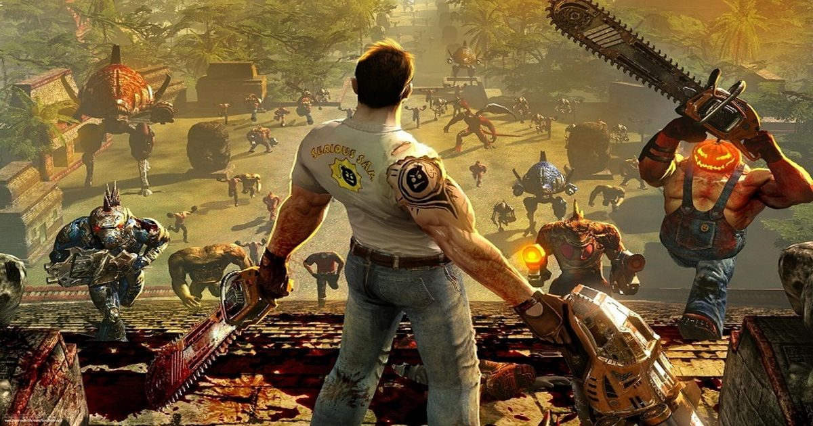

«Те же самые впечатления, что и 20 лет назад»: российские энтузиасты перенесли мультиплеер Serious Sam: The First Encounter и The Second Encounter в браузер
Команда Dos.Zone Team, реализовавшая прославленную стратегию «Герои Меча и Магии III» в браузере, представила новый проект — веб-версии безбашенных шутеров Serious Sam: The First Encounter и Serious Sam: The Second Encounter от Croteam.
Источник изображения: Croteam